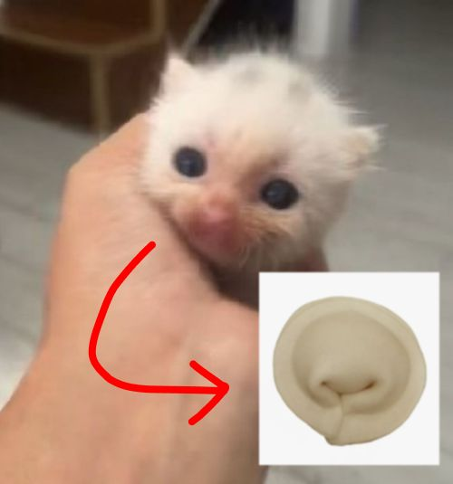

Гайд на приготовление:
ПЕЛЬМЕНИИИИИ
Описание
Еда богов сто проц
Ингредиенты
- Упаковка пельменей
- Вода
- Сметана
- Соль, перчик
Шаги приготовления
- подраться за упаковку пельменей (желательно в магазине светофор)
- Прийти домой и закипятить воду в чайнике
- Разорвать упаковку пельменей и кинуть вместе с упаковкой в раковину (Так вкуснее, отвечаю)
- Понять, что вы сделали бред, взять и начать делать данки пельменями в чайник
- Не ждать пока пельмени сварятся, а сходить наконец помыться чееееел
- Вернуться и понять, что пельмени уже сварились, достать их и положить в тарелку
- Добавить сметану, соль и перчик по вкусу
- Съесть и лайкнуть пост Шамана
